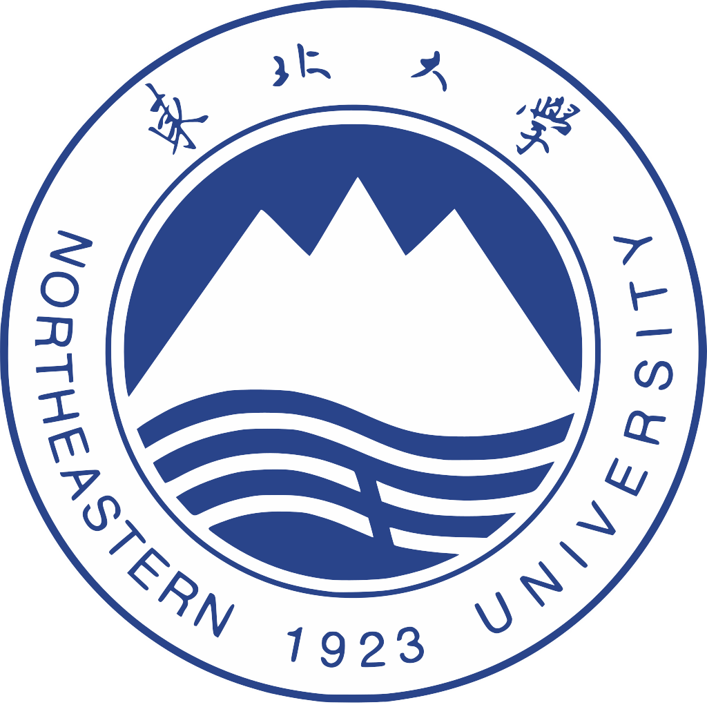

希望在真实工程环境中补强编码、调试、测试、协作和系统理解能力。

熟悉基础语法、函数封装、模块化实现、文件处理、数据处理与调试。
项目经历集中在生产计划优化、数据分析、算法实现和结果验证。
About Me
把数据、算法和系统逻辑落到可运行的代码里
我的背景
我的学习路径从工业智能延伸到控制科学与工程，长期接触生产计划、优化模型、 复杂约束和数据驱动的问题。相比只停留在模型层面，我更希望把算法流程、 数据处理和评估逻辑整理成清晰、可维护、可复现的软件模块。
目前我正在系统补强软件开发基础，包括 Python 编程、常见数据结构与算法、 Git、SQL、单元测试、本地构建、网络通信基础以及问题定位流程。
我希望在实习中贡献什么
- 用 Python 完成数据清洗、文件处理、指标计算和实验结果整理。
- 把复杂流程拆成函数、模块和清晰的数据输入输出。
- 在代码阅读、调试、文档记录和复现实验中保持耐心与准确性。
- 在真实团队协作中持续提升工程规范、测试意识和交付能力。
Research & Projects
技术项目
Python / Optimization / Decision Support
矿业生产链和产业链智能协同与优化研究
围绕矿山企业月生产计划与动态市场需求脱节的问题，负责研发生产计划智能优化方法及系统。 以 Python 完成数据处理、HMM 状态识别、场景生成与综合评估等模块， 实现“需求预测 - 方案生成 - 评估优选”的闭环流程。
- 完成数据处理、状态识别、方案生成和结果评估流程。
- 参与智能采矿系统模块搭建，支持方案管理、结果保存与查询。
- 通过真实数据验证与结果复核，支持问题定位和方案迭代。
2024.09 - 2026.03
平均综合效用提升 0.94%
查看技术项目详情
Algorithm / Multi-objective Optimization
钢铁生产计划智能优化研究
针对炼钢炉次计划中多工序耦合、柔性板坯组批困难及低碳生产要求并存的问题， 参与构建多目标组合优化模型，统筹炼钢、连铸、热轧约束与碳排放目标。
- 设计并实现 LS-MOEA/D 算法流程。
- 完成编码、解码、交叉、变异、修复与局部搜索模块。
- 基于真实钢厂 60 块板坯数据完成实验分析，输出 15 组 Pareto 解。
Internship
实习经历
华晨宝马汽车有限公司 - 动力总成工厂部门
Technology Gluing & Foaming / GEN6 电池生产项目
- 参与 GEN6 电池生产项目发泡与涂胶工艺导入，支持工艺文件管理、现场测试配合与数据分析。
- 维护发泡工艺视频、EC 文档及多边形采样文档，完善工艺资料留存与追溯链条。
- 利用 Power BI 搭建生产参数可视化报表，完成数据清洗、指标展示与异常趋势观察。
- 理解设备参数与软件数据流协同关系，辅助工程师监控关键指标并支持工艺调控。
Skills
技能专长
编程语言
以 Python 为主要开发语言，熟悉基础语法、函数封装、模块化实现、文件处理、数据处理与调试；了解 Matlab 和 C 语言基础语法。
数据结构与算法
熟悉数组、链表、栈、队列、树、哈希表等常见数据结构，了解排序、搜索等基础算法与复杂度分析。
工程实践
了解 SQL、Git、单元测试、本地构建与问题定位基本流程，可结合工具辅助代码理解、调试思路整理和文档撰写。
通信基础
了解 TCP/IP、HTTP、Socket 通信和网络分层模型基础，愿意在通用软件开发中持续补强工程能力。
Education & Achievements
教育经历与成果

教育经历
东北大学（985）
信息学院 · 控制科学与工程（A+）硕士
2024.09 - 至今
东北大学（985）
信息学院 · 工业智能 本科（保研）
GPA: 3.83/5.0 · Rank: 6/64 · 2020.09 - 2024.06
阶段成果
发明专利
面向市场需求影响的月生产计划调整智能优化方法及系统（已受理）
学术论文
考虑动态需求耦合风险偏好的采矿生产月计划调整优化方法（第一作者，已录用）
奖项
第二届工业互联网优秀论文奖（国家级）；东北大学优秀学生一等奖学金；最具影响力毕业生。
Contact
欢迎交流软件开发实习机会
公开主页仅展示邮箱、GitHub 与简历下载链接。更完整的联系方式保留在 PDF 简历中。